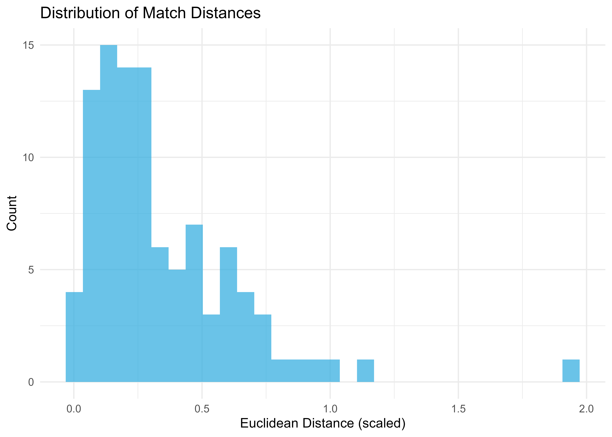
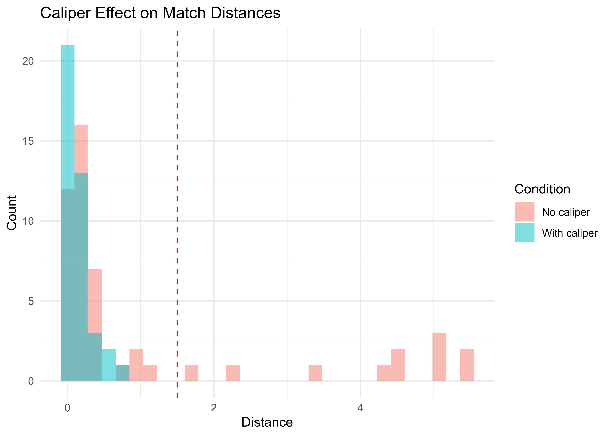
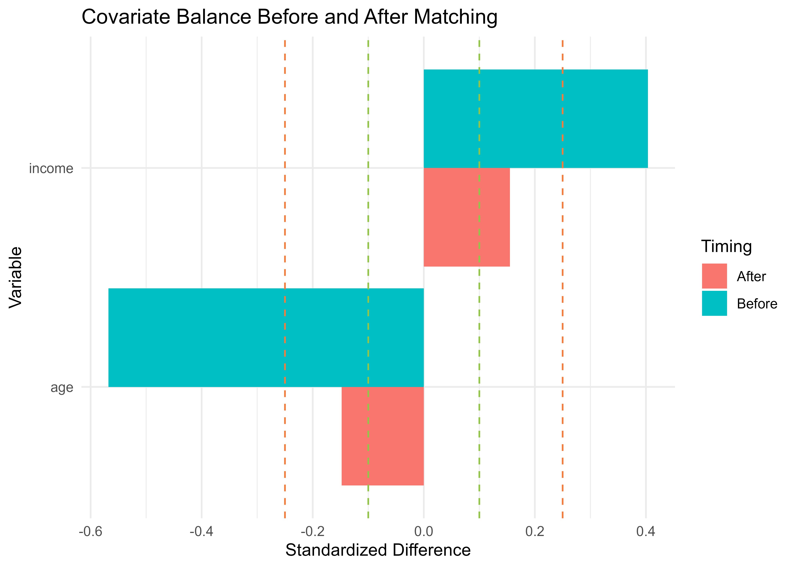

Matching Workflows: From Data to Publication
Gilles Colling
2025-11-25
Source:vignettes/matching-workflows.Rmd
matching-workflows.RmdOverview
Matching is a fundamental technique for creating comparable groups in observational studies. Unlike random assignment, observational data often contain systematic differences between treatment and control groups that confound causal inference. Matching addresses this by pairing similar units based on observed characteristics, creating “apples-to-apples” comparisons.
This vignette follows a complete workflow from raw data to publication-ready results, using a realistic job training evaluation as the running example. You’ll learn to handle the full pipeline: preprocessing, matching, assessment, and reporting.
Who This Vignette Is For
Audience: Researchers, epidemiologists, economists, data scientists working with observational data
Prerequisites:
- Familiarity with basic
couplrusage (vignette("getting-started")) - Understanding of causal inference concepts (treatment effects, confounding)
- Basic statistics (means, standard deviations, t-tests)
What You’ll Learn:
- How to match treatment and control units with
match_couples() - Automatic preprocessing: scaling, health checks, categorical encoding
- Assessing match quality with
balance_diagnostics() - When to use optimal vs greedy matching
- Creating publication-ready balance tables
Time to complete: 30-45 minutes
Documentation Roadmap
| Vignette | Focus | Difficulty |
|---|---|---|
| Getting Started | Basic LAP solving, API introduction | Beginner |
| Algorithms | Mathematical foundations, solver selection | Intermediate |
| Matching Workflows | Production matching pipelines | Intermediate |
| Pixel Morphing | Scientific applications, approximations | Advanced |
You are here: Matching Workflows
The Running Example: Job Training Evaluation
Throughout this vignette, we evaluate a job training program’s effect on earnings. The challenge: participants self-selected into the program, so they differ systematically from non-participants in age, education, and prior earnings. Without matching, any earnings difference could be due to these baseline differences rather than the program itself.
Our goal: Create comparable treatment and control groups, assess balance quality, and estimate the treatment effect credibly.
Problem Definition
The Matching Problem
Given two groups of units:
- Left group (treatment, exposed, cases): units
- Right group (control, unexposed, controls): units
Each unit has a covariate vector describing characteristics we want to balance (age, income, education, etc.).
Goal: Find one-to-one matches that minimize total distance:
where is a distance function (typically Euclidean or Mahalanobis) and is a matching assignment.
Why Matching Matters
Without matching: - Groups may differ systematically on important covariates - Treatment effect estimates are confounded by these differences - Statistical adjustments (regression) rely on untestable assumptions
With matching: - Create comparable groups that differ primarily in treatment status - Balance covariates to reduce confounding - Improve causal inference by mimicking randomized experiments - Transparent, non-parametric preprocessing step
Distance Metrics
The quality of matching depends on the distance metric:
Euclidean distance (after scaling):
Mahalanobis distance (accounts for correlations):
Propensity score distance (single dimension):
where is the propensity score.
couplr defaults to Euclidean distance with automatic
scaling, which works well for most applications.
Basic Usage
Creating a Matched Sample
The simplest workflow uses match_couples() with
automatic preprocessing:
# Simulate observational data
set.seed(123)
n_left <- 100
n_right <- 150
# Treatment group (tends to be younger, higher income)
left_data <- tibble(
id = 1:n_left,
age = rnorm(n_left, mean = 45, sd = 10),
income = rnorm(n_left, mean = 60000, sd = 15000),
education = sample(c("HS", "BA", "MA"), n_left, replace = TRUE),
group = "treatment"
)
# Control group (older, lower income on average)
right_data <- tibble(
id = 1:n_right,
age = rnorm(n_right, mean = 52, sd = 12),
income = rnorm(n_right, mean = 50000, sd = 18000),
education = sample(c("HS", "BA", "MA"), n_right, replace = TRUE),
group = "control"
)
# Perform optimal matching
result <- match_couples(
left = left_data,
right = right_data,
vars = c("age", "income"),
auto_scale = TRUE,
return_diagnostics = TRUE
)
#> Auto-selected scaling method: standardize
# View matched pairs
head(result$pairs)
#> # A tibble: 6 × 5
#> left_id right_id distance .age_diff .income_diff
#> <chr> <chr> <dbl> <dbl> <dbl>
#> 1 1 27 0.530 -5.68 2942.
#> 2 2 37 0.299 3.33 980.
#> 3 3 15 0.0382 -0.251 -512.
#> 4 4 11 0.691 -7.19 4587.
#> 5 5 73 0.425 -4.48 2583.
#> 6 6 131 0.133 0.00187 -2186.
# Summary statistics
result$info
#> $solver
#> [1] "auction_scaled"
#>
#> $n_matched
#> [1] 100
#>
#> $total_distance
#> [1] 33.77392
#>
#> $method
#> [1] "lap"
#>
#> $distance_metric
#> [1] "euclidean"
#>
#> $scaled
#> [1] TRUE
#>
#> $n_left
#> [1] 100
#>
#> $n_right
#> [1] 150The result contains:
-
pairs: Matched pairs with IDs and distances -
info: Matching method, counts, total distance -
left_unmatched,right_unmatched: Units without matches -
cost_matrix: Full distance matrix (ifreturn_diagnostics = TRUE)
Understanding the Output
# How many matched?
cat("Matched pairs:", result$info$n_matched, "\n")
#> Matched pairs: 100
cat("Unmatched left:", nrow(result$left_unmatched), "\n")
#> Unmatched left:
cat("Unmatched right:", nrow(result$right_unmatched), "\n")
#> Unmatched right:
# Distribution of match distances
summary(result$pairs$distance)
#> Min. 1st Qu. Median Mean 3rd Qu. Max.
#> 0.002044 0.139855 0.249548 0.337739 0.466174 1.939711
# Visualize match quality
ggplot(result$pairs, aes(x = distance)) +
geom_histogram(bins = 30, fill = "steelblue", alpha = 0.7) +
labs(
title = "Distribution of Match Distances",
x = "Euclidean Distance (scaled)",
y = "Count"
) +
theme_minimal()
Interpretation:
- Lower distances indicate better matches (more similar units)
- Median distance provides typical match quality
- Large distances suggest poor matches (consider caliper constraints)
Automatic Preprocessing
Why Preprocessing Matters
Raw covariates often have:
- Different scales: Age in years (20-80), income in dollars (20,000-200,000)
- Different units: Continuous (age), categorical (education), binary (smoker)
- Data quality issues: Missing values, constant variables, extreme outliers
Without preprocessing, high-variance variables dominate distance calculations.
Smart Scaling with auto_scale = TRUE
When auto_scale = TRUE, match_couples()
automatically:
-
Detects problematic variables
- Constant variables (SD = 0) → excluded with warning
- High missingness (>50%) → warned
- Extreme skewness (|skew| > 2) → informed
-
Applies appropriate scaling
- Continuous variables → scaled by selected method
- Binary variables (0/1) → used as-is
- Categorical → converted to numeric if ordered
-
Handles categorical variables
- Unordered factors → converted to binary indicators
- Ordered factors → converted to numeric ranks
# Create data with scaling challenges
set.seed(456)
challenging_data <- tibble(
id = 1:50,
age = rnorm(50, 50, 10), # Years (reasonable scale)
income = rnorm(50, 60000, 20000), # Dollars (large scale)
bmi = rnorm(50, 25, 5), # Ratio (small scale)
smoker = sample(0:1, 50, replace = TRUE), # Binary
education = factor(
sample(c("HS", "BA", "MA", "PhD"), 50, replace = TRUE),
ordered = TRUE,
levels = c("HS", "BA", "MA", "PhD")
)
)
left_chal <- challenging_data[1:25, ]
right_chal <- challenging_data[26:50, ]
# Match WITHOUT auto-scaling (income dominates)
result_no_scale <- match_couples(
left_chal, right_chal,
vars = c("age", "income", "bmi"),
auto_scale = FALSE
)
# Match WITH auto-scaling (all variables contribute)
result_scaled <- match_couples(
left_chal, right_chal,
vars = c("age", "income", "bmi"),
auto_scale = TRUE,
scale = "robust" # Median/MAD scaling (robust to outliers)
)
# Compare match quality
cat("Without scaling - mean distance:", mean(result_no_scale$pairs$distance), "\n")
#> Without scaling - mean distance: 3572.096
cat("With scaling - mean distance:", mean(result_scaled$pairs$distance), "\n")
#> With scaling - mean distance: 0.9784372Scaling Methods
Three scaling strategies available via scale
parameter:
1. Robust scaling (scale = "robust",
default):
- Uses median and median absolute deviation (MAD)
- Resistant to outliers and skewness
- Best for: Real-world data with potential outliers
2. Standardization
(scale = "standardize"):
- Classical z-score normalization
- Assumes approximate normality
- Best for: Clean, normally-distributed data
3. Range scaling (scale = "range"):
- Scales to [0, 1] range
- Preserves exact relationships
- Best for: Bounded variables, visualization
# Demonstrate scaling methods
demo_var <- c(10, 20, 25, 30, 100) # Contains outlier (100)
# Function to show scaling
show_scaling <- function(x, method) {
left_demo <- tibble(id = 1:3, var = x[1:3])
right_demo <- tibble(id = 1:2, var = x[4:5])
result <- match_couples(
left_demo, right_demo,
vars = "var",
auto_scale = TRUE,
scale = method,
return_diagnostics = TRUE
)
# Extract scaled values from cost matrix
cat(method, "scaling:\n")
cat(" Original:", x, "\n")
cat(" Distance matrix diagonal:", diag(result$cost_matrix)[1:2], "\n\n")
}
show_scaling(demo_var, "robust")
#> robust scaling:
#> Original: 10 20 25 30 100
#> Distance matrix diagonal: NA NA
show_scaling(demo_var, "standardize")
#> standardize scaling:
#> Original: 10 20 25 30 100
#> Distance matrix diagonal: NA NA
show_scaling(demo_var, "range")
#> range scaling:
#> Original: 10 20 25 30 100
#> Distance matrix diagonal: NA NAHealth Checks and Warnings
The preprocessing system provides informative diagnostics:
# Create data with issues
problematic_data <- tibble(
id = 1:100,
age = rnorm(100, 50, 10),
constant_var = 5, # No variation - will warn
mostly_missing = c(rnorm(20, 50, 10), rep(NA, 80)), # >50% missing
extreme_skew = rexp(100, rate = 0.1) # Very skewed
)
# Attempt matching - will show warnings
result <- match_couples(
problematic_data[1:50, ],
problematic_data[51:100, ],
vars = c("age", "constant_var", "mostly_missing", "extreme_skew"),
auto_scale = TRUE
)
# Warning messages will indicate:
# - "constant_var excluded (SD = 0)"
# - "mostly_missing has 80% missing values"
# - "extreme_skew has high skewness (3.2)"Optimal vs Greedy Matching
For large datasets (n > 5,000), optimal matching becomes
computationally expensive. couplr provides fast greedy
alternatives.
When to Use Each Approach
Optimal matching
(method = "optimal"):
- Minimizes total distance (globally optimal solution)
- Uses linear assignment algorithms ( complexity)
- Suitable for: n < 5,000, when optimality is critical
- Typical runtime: <1 second for n=1,000, ~10 seconds for n=3,000
Greedy matching
(method = "greedy"):
- Fast approximation (10-100x faster)
- Three strategies: sorted, row_best, pq
- Suitable for: n > 5,000, exploratory analysis, when speed matters
- Typical runtime: <1 second for n=10,000
# Create moderately large dataset
set.seed(789)
n <- 1000
large_left <- tibble(
id = 1:n,
x1 = rnorm(n),
x2 = rnorm(n),
x3 = rnorm(n)
)
large_right <- tibble(
id = 1:n,
x1 = rnorm(n),
x2 = rnorm(n),
x3 = rnorm(n)
)
# Optimal matching
time_optimal <- system.time({
result_optimal <- match_couples(
large_left, large_right,
vars = c("x1", "x2", "x3"),
method = "hungarian"
)
})
# Greedy matching (row_best strategy)
time_greedy <- system.time({
result_greedy <- greedy_couples(
large_left, large_right,
vars = c("x1", "x2", "x3"),
strategy = "row_best"
)
})
# Compare
cat("Optimal matching:\n")
#> Optimal matching:
cat(" Time:", round(time_optimal["elapsed"], 3), "seconds\n")
#> Time: 22.16 seconds
cat(" Mean distance:", round(mean(result_optimal$pairs$distance), 4), "\n\n")
#> Mean distance: 0.3368
cat("Greedy matching:\n")
#> Greedy matching:
cat(" Time:", round(time_greedy["elapsed"], 3), "seconds\n")
#> Time: 0.91 seconds
cat(" Mean distance:", round(mean(result_greedy$pairs$distance), 4), "\n")
#> Mean distance: 0.4667
cat(" Speedup:", round(time_optimal["elapsed"] / time_greedy["elapsed"], 1), "x\n")
#> Speedup: 24.4 xGreedy Strategies
Three greedy strategies available via
greedy_couples():
1. Sorted (strategy = "sorted"):
- Sort all possible pairs by distance
- Assign greedily from best to worst
- Best quality among greedy methods
- Slowest greedy option (still much faster than optimal)
Algorithm:
1. Compute all n_L × n_R distances
2. Sort pairs by distance (ascending)
3. For each pair in sorted order:
- If both units unmatched, assign them
4. Stop when no more matches possible2. Row-best (strategy = "row_best",
default):
- For each left unit, find best available right unit
- Process left units in order
- Fast and simple
- Medium quality
Algorithm:
1. For i = 1 to n_L:
- Find unmatched right unit j with minimum distance to i
- Assign (i, j)
2. Return all assignments3. Priority queue
(strategy = "pq"):
- Maintains priority queue of potential matches
- Updates dynamically as assignments made
- Best for very large problems
- Fastest option
# Compare greedy strategies on same data
set.seed(101)
test_left <- tibble(id = 1:200, x = rnorm(200))
test_right <- tibble(id = 1:200, x = rnorm(200))
strategies <- c("sorted", "row_best", "pq")
results <- list()
for (strat in strategies) {
time <- system.time({
result <- greedy_couples(
test_left, test_right,
vars = "x",
strategy = strat
)
})
results[[strat]] <- list(
time = time["elapsed"],
mean_dist = mean(result$pairs$distance),
total_dist = result$info$total_distance
)
}
# Display comparison
comparison <- do.call(rbind, lapply(names(results), function(s) {
data.frame(
strategy = s,
time_sec = round(results[[s]]$time, 4),
mean_distance = round(results[[s]]$mean_dist, 4),
total_distance = round(results[[s]]$total_dist, 2)
)
}))
print(comparison)
#> strategy time_sec mean_distance total_distance
#> elapsed sorted 0.05 0.0912 18.24
#> elapsed1 row_best 0.05 0.0968 19.36
#> elapsed2 pq 0.04 0.0912 18.24Recommendation:
- Default to
strategy = "row_best"for good speed/quality balance - Use
strategy = "sorted"when quality is important but optimal is too slow - Use
strategy = "pq"for n > 10,000
Caliper Constraints
Calipers impose maximum allowable match distances to ensure minimum quality.
Why Use Calipers
Without calipers, optimal matching may pair very dissimilar units just to maximize the number of matches. Calipers prevent this by:
- Setting a distance threshold beyond which matches are forbidden
- Reducing the number of matches to improve average quality
- Implementing the “common support” requirement in propensity score matching
# Create data where some units are far apart
set.seed(202)
left_cal <- tibble(
id = 1:50,
x = c(rnorm(40, mean = 0, sd = 1), rnorm(10, mean = 5, sd = 0.5)) # Some outliers
)
right_cal <- tibble(
id = 1:50,
x = rnorm(50, mean = 0, sd = 1)
)
# Match without caliper - pairs everything
result_no_cal <- match_couples(
left_cal, right_cal,
vars = "x",
auto_scale = FALSE
)
# Match with caliper - excludes poor matches
result_with_cal <- match_couples(
left_cal, right_cal,
vars = "x",
max_distance = 1.5, # Caliper: max distance = 1.5
auto_scale = FALSE
)
cat("Without caliper:\n")
#> Without caliper:
cat(" Matched:", result_no_cal$info$n_matched, "\n")
#> Matched: 50
cat(" Mean distance:", round(mean(result_no_cal$pairs$distance), 3), "\n")
#> Mean distance: 1.129
cat(" Max distance:", round(max(result_no_cal$pairs$distance), 3), "\n\n")
#> Max distance: 5.453
cat("With caliper (1.5):\n")
#> With caliper (1.5):
cat(" Matched:", result_with_cal$info$n_matched, "\n")
#> Matched: 40
cat(" Mean distance:", round(mean(result_with_cal$pairs$distance), 3), "\n")
#> Mean distance: 0.143
cat(" Max distance:", round(max(result_with_cal$pairs$distance), 3), "\n")
#> Max distance: 0.763
# Visualize caliper effect
ggplot(result_no_cal$pairs, aes(x = distance)) +
geom_histogram(aes(fill = "No caliper"), bins = 30, alpha = 0.5) +
geom_histogram(
data = result_with_cal$pairs,
aes(fill = "With caliper"),
bins = 30,
alpha = 0.5
) +
geom_vline(xintercept = 1.5, linetype = "dashed", color = "red") +
labs(
title = "Caliper Effect on Match Distances",
x = "Distance",
y = "Count",
fill = "Condition"
) +
theme_minimal()
Choosing Caliper Width
Common approaches:
1. Standard deviation rule: Caliper = 0.1 to 0.25 pooled SD
# Calculate pooled SD
combined <- bind_rows(
left_data %>% mutate(group = "left"),
right_data %>% mutate(group = "right")
)
pooled_sd <- sd(combined$age) # For single variable
caliper_width <- 0.2 * pooled_sd
result <- match_couples(
left_data, right_data,
vars = "age",
max_distance = caliper_width
)2. Propensity score rule: 0.1 to 0.25 SD of propensity score logit
3. Empirical rule: Examine distance distribution, exclude extreme tail
# Fit all matches first
all_matches <- match_couples(left_cal, right_cal, vars = "x")
# Choose caliper at 90th percentile
caliper_90 <- quantile(all_matches$pairs$distance, 0.90)
# Refit with caliper
refined_matches <- match_couples(
left_cal, right_cal,
vars = "x",
max_distance = caliper_90
)
cat("90th percentile caliper:", round(caliper_90, 3), "\n")
#> 90th percentile caliper: 4.532
cat("Matches retained:",
round(100 * refined_matches$info$n_matched / all_matches$info$n_matched, 1), "%\n")
#> Matches retained: 100 %Blocking and Stratification
Blocking (exact matching on key variables) combined with distance matching on remaining covariates is a powerful strategy.
Why Use Blocking
Benefits:
- Ensures exact balance on critical variables (site, gender, age category)
- Reduces problem size (smaller within-block matching problems)
- Prevents poor cross-block matches
- Transparent and interpretable
When to use:
- Strong domain knowledge about important stratification variables
- Variables that absolutely must be balanced (e.g., study site in multi-center trials)
- Large datasets where blocking reduces computational burden
Exact Blocking with matchmaker()
# Create multi-site data
set.seed(303)
multi_site <- bind_rows(
tibble(
id = 1:100,
site = sample(c("A", "B", "C"), 100, replace = TRUE),
age = rnorm(100, 50, 10),
income = rnorm(100, 55000, 15000),
group = "treatment"
),
tibble(
id = 101:250,
site = sample(c("A", "B", "C"), 150, replace = TRUE),
age = rnorm(150, 50, 10),
income = rnorm(150, 55000, 15000),
group = "control"
)
)
left_site <- multi_site %>% filter(group == "treatment")
right_site <- multi_site %>% filter(group == "control")
# Create exact blocks by site
blocks <- matchmaker(
left = left_site,
right = right_site,
block_type = "group",
block_by = "site"
)
cat("Blocking structure:\n")
#> Blocking structure:
print(blocks$block_summary)
#> # A tibble: 3 × 3
#> block_id n_left n_right
#> <chr> <dbl> <dbl>
#> 1 A 36 58
#> 2 B 26 42
#> 3 C 38 50
# Match within blocks
result_blocked <- match_couples(
left = blocks$left,
right = blocks$right,
vars = c("age", "income"),
block_id = "block_id", # Use block IDs from matchmaker
auto_scale = TRUE
)
#> Auto-selected scaling method: standardize
# Verify exact site balance
result_blocked$pairs %>%
mutate(left_id = as.integer(left_id), right_id = as.integer(right_id)) %>%
left_join(left_site %>% select(id, site), by = c("left_id" = "id")) %>%
left_join(right_site %>% select(id, site), by = c("right_id" = "id"), suffix = c("_left", "_right")) %>%
count(site_left, site_right)
#> # A tibble: 3 × 3
#> site_left site_right n
#> <chr> <chr> <int>
#> 1 A A 36
#> 2 B B 26
#> 3 C C 38Cluster-Based Blocking
For continuous variables, use k-means clustering to create blocks:
# Create blocks based on age groups (data-driven)
cluster_blocks <- matchmaker(
left = left_site,
right = right_site,
block_type = "cluster",
block_vars = "age",
n_blocks = 3
)
cat("Cluster-based blocks:\n")
#> Cluster-based blocks:
print(cluster_blocks$block_summary)
#> # A tibble: 3 × 4
#> block_id n_left n_right mean_age
#> <chr> <dbl> <dbl> <dbl>
#> 1 cluster_1 37 56 61.2
#> 2 cluster_2 41 65 48.4
#> 3 cluster_3 22 29 37.9
# Match within clusters
result_clustered <- match_couples(
left = cluster_blocks$left,
right = cluster_blocks$right,
vars = c("age", "income"),
block_id = "block_id",
auto_scale = TRUE
)
#> Auto-selected scaling method: standardize
# Show age distribution by cluster
cluster_blocks$left %>%
group_by(block_id) %>%
summarise(
n = n(),
mean_age = mean(age),
sd_age = sd(age)
)
#> # A tibble: 3 × 4
#> block_id n mean_age sd_age
#> <chr> <int> <dbl> <dbl>
#> 1 cluster_1 37 61.2 4.59
#> 2 cluster_2 41 48.4 3.27
#> 3 cluster_3 22 37.9 4.42Balance Diagnostics
After matching, assess balance quality using
balance_diagnostics().
Key Balance Metrics
1. Standardized differences:
Thresholds: - < 0.1: Excellent balance - 0.1 - 0.25: Good balance - 0.25 - 0.5: Acceptable (may need further adjustment) - > 0.5: Poor balance (reconsider matching strategy)
2. Variance ratios:
Interpretation: - Close to 1.0: Similar variability (good) - < 0.5 or > 2.0: Concerning imbalance in spread
3. Kolmogorov-Smirnov tests:
- Non-parametric test for distributional differences
- Sensitive to differences beyond mean/variance
- P-value > 0.05 suggests similar distributions
# Perform matching
match_result <- match_couples(
left = left_data,
right = right_data,
vars = c("age", "income"),
auto_scale = TRUE
)
#> Auto-selected scaling method: standardize
# Get matched samples
matched_left <- left_data %>%
filter(id %in% match_result$pairs$left_id)
matched_right <- right_data %>%
filter(id %in% match_result$pairs$right_id)
# Compute balance diagnostics
balance <- balance_diagnostics(
result = match_result,
left = left_data,
right = right_data,
vars = c("age", "income")
)
# Print balance summary
print(balance)
#>
#> Balance Diagnostics for Matched Pairs
#> ======================================
#>
#> Matching Summary:
#> Method: lap
#> Matched pairs: 100
#> Unmatched left: 0 (of 100)
#> Unmatched right: 50 (of 150)
#>
#> Variable-level Balance:
#> # A tibble: 2 × 7
#> Variable `Mean Left` `Mean Right` `Mean Diff` `Std Diff` `Var Ratio` `KS Stat`
#> <chr> <dbl> <dbl> <dbl> <dbl> <dbl> <dbl>
#> 1 age 45.9 47.3 -1.43 -0.148 0.891 0.18
#> 2 income 58387. 56118. 2269. 0.155 0.982 0.09
#>
#> Overall Balance:
#> Mean |Std Diff|: 0.151 (Good)
#> Max |Std Diff|: 0.155
#> Vars with |Std Diff| > 0.25: 0.0%
#>
#> Balance Interpretation:
#> |Std Diff| < 0.10: Excellent balance
#> |Std Diff| 0.10-0.25: Good balance
#> |Std Diff| 0.25-0.50: Acceptable balance
#> |Std Diff| > 0.50: Poor balance
# Extract balance table for reporting
balance_table(balance)
#> # A tibble: 2 × 7
#> Variable `Mean Left` `Mean Right` `Mean Diff` `Std Diff` `Var Ratio` `KS Stat`
#> <chr> <dbl> <dbl> <dbl> <dbl> <dbl> <dbl>
#> 1 age 45.9 47.3 -1.43 -0.148 0.891 0.18
#> 2 income 58387. 56118. 2269. 0.155 0.982 0.09How to Interpret Balance Results
The balance diagnostics output tells you whether your match succeeded. Here’s how to read it:
Balance Diagnostics
-------------------
Variables: age, income
Variable Statistics:
variable mean_left mean_right std_diff var_ratio ks_stat ks_p
age 45.2 45.8 -0.08 0.95 0.06 0.89
income 58000 56500 0.12 1.08 0.09 0.45Reading each column:
| Column | Meaning | Good Values |
|---|---|---|
std_diff |
Standardized difference in means | |value| < 0.1 excellent, < 0.25 acceptable |
var_ratio |
Ratio of standard deviations | 0.5–2.0 acceptable, closer to 1.0 is better |
ks_stat |
Kolmogorov-Smirnov statistic | Smaller is better |
ks_p |
KS test p-value | > 0.05 suggests similar distributions |
Quality thresholds for standardized differences:
- < 0.1: Excellent balance—treat as successfully matched
- 0.1–0.25: Good balance—acceptable for most purposes
- 0.25–0.5: Marginal—consider refinement or sensitivity analysis
- > 0.5: Poor balance—matching strategy needs revision
What to do if balance is poor:
- Add more matching variables that explain the imbalance
- Tighten calipers (accept fewer matches but better quality)
- Try blocking on the problematic variable
- Report and discuss in limitations section
Visualizing Balance
# Before-after balance plot
# (Requires creating pre-match balance for comparison)
# For pre-match comparison, just compute summary statistics directly
pre_match_stats <- tibble(
variable = c("age", "income"),
std_diff = c(
(mean(left_data$age) - mean(right_data$age)) / sqrt((sd(left_data$age)^2 + sd(right_data$age)^2) / 2),
(mean(left_data$income) - mean(right_data$income)) / sqrt((sd(left_data$income)^2 + sd(right_data$income)^2) / 2)
),
when = "Before"
)
# Combine for plotting
balance_comparison <- bind_rows(
pre_match_stats,
balance$var_stats %>% select(variable, std_diff) %>% mutate(when = "After")
)
ggplot(balance_comparison, aes(x = variable, y = std_diff, fill = when)) +
geom_col(position = "dodge") +
geom_hline(yintercept = c(-0.1, 0.1), linetype = "dashed", color = "darkgreen") +
geom_hline(yintercept = c(-0.25, 0.25), linetype = "dashed", color = "orange") +
labs(
title = "Covariate Balance Before and After Matching",
x = "Variable",
y = "Standardized Difference",
fill = "Timing"
) +
theme_minimal() +
coord_flip()
Real-World Example: Treatment Effect Estimation
Complete workflow for estimating treatment effects in an observational study.
Scenario
Evaluate the effect of a job training program on earnings. Participants self-selected into the program, creating potential selection bias.
Data: - Treatment: 200 program participants - Control: 500 non-participants - Covariates: age, education, prior earnings, employment status - Outcome: Earnings one year after program
Step 1: Data Preparation
set.seed(404)
# Simulate realistic scenario with selection bias
# Program attracts younger, more educated, currently employed individuals
create_participant <- function(n, is_treatment) {
if (is_treatment) {
tibble(
id = 1:n,
age = rnorm(n, mean = 35, sd = 8),
education_years = rnorm(n, mean = 14, sd = 2),
prior_earnings = rnorm(n, mean = 35000, sd = 10000),
employed = sample(c(0, 1), n, replace = TRUE, prob = c(0.3, 0.7)),
treatment = 1
)
} else {
tibble(
id = (n+1):(n+500),
age = rnorm(500, mean = 42, sd = 12),
education_years = rnorm(500, mean = 12, sd = 3),
prior_earnings = rnorm(500, mean = 30000, sd = 12000),
employed = sample(c(0, 1), 500, replace = TRUE, prob = c(0.5, 0.5)),
treatment = 0
)
}
}
treatment_group <- create_participant(200, TRUE)
control_group <- create_participant(500, FALSE)
# Simulate outcome (earnings) with treatment effect
# True effect: +$5,000, with heterogeneity
treatment_group <- treatment_group %>%
mutate(
earnings = prior_earnings +
5000 + # True treatment effect
2000 * rnorm(n()) + # Random variation
100 * education_years # Education effect
)
control_group <- control_group %>%
mutate(
earnings = prior_earnings +
2000 * rnorm(n()) +
100 * education_years
)
# Examine baseline imbalance
cat("Pre-matching differences:\n")
#> Pre-matching differences:
cat("Age diff:",
mean(treatment_group$age) - mean(control_group$age), "\n")
#> Age diff: -5.525329
cat("Education diff:",
mean(treatment_group$education_years) - mean(control_group$education_years), "\n")
#> Education diff: 1.801605
cat("Prior earnings diff:",
mean(treatment_group$prior_earnings) - mean(control_group$prior_earnings), "\n")
#> Prior earnings diff: 5420.931Step 2: Perform Matching
# Match on baseline covariates
job_match <- match_couples(
left = treatment_group,
right = control_group,
vars = c("age", "education_years", "prior_earnings", "employed"),
auto_scale = TRUE,
scale = "robust",
return_diagnostics = TRUE
)
cat("Matching summary:\n")
#> Matching summary:
cat(" Treated units:", nrow(treatment_group), "\n")
#> Treated units: 200
cat(" Matched treated:", job_match$info$n_matched, "\n")
#> Matched treated: 200
cat(" Match rate:",
round(100 * job_match$info$n_matched / nrow(treatment_group), 1), "%\n")
#> Match rate: 100 %Step 3: Assess Balance
# Extract matched samples
matched_treated <- treatment_group %>%
filter(id %in% job_match$pairs$left_id)
matched_control <- control_group %>%
filter(id %in% job_match$pairs$right_id)
# Compute balance
job_balance <- balance_diagnostics(
result = job_match,
left = treatment_group,
right = control_group,
vars = c("age", "education_years", "prior_earnings", "employed")
)
#> Warning in ks.test.default(left_clean, right_clean): p-value will be
#> approximate in the presence of ties
print(job_balance)
#>
#> Balance Diagnostics for Matched Pairs
#> ======================================
#>
#> Matching Summary:
#> Method: lap
#> Matched pairs: 200
#> Unmatched left: 0 (of 200)
#> Unmatched right: 300 (of 500)
#>
#> Variable-level Balance:
#> # A tibble: 4 × 7
#> Variable `Mean Left` `Mean Right` `Mean Diff` `Std Diff` `Var Ratio` `KS Stat`
#> <chr> <dbl> <dbl> <dbl> <dbl> <dbl> <dbl>
#> 1 age 35.4 36.0 -0.656 -0.081 0.869 0.1
#> 2 educati… 13.9 13.5 0.4 0.195 0.93 0.18
#> 3 prior_e… 35015. 33795. 1219. 0.121 1.01 0.08
#> 4 employed 0.7 0.635 0.065 0.138 0.952 0.065
#>
#> Overall Balance:
#> Mean |Std Diff|: 0.134 (Good)
#> Max |Std Diff|: 0.195
#> Vars with |Std Diff| > 0.25: 0.0%
#>
#> Balance Interpretation:
#> |Std Diff| < 0.10: Excellent balance
#> |Std Diff| 0.10-0.25: Good balance
#> |Std Diff| 0.25-0.50: Acceptable balance
#> |Std Diff| > 0.50: Poor balance
# Check overall balance quality
cat("\nOverall balance:\n")
#>
#> Overall balance:
cat(" Mean |std diff|:", round(job_balance$overall$mean_abs_std_diff, 3), "\n")
#> Mean |std diff|: 0.134
cat(" Max |std diff|:", round(job_balance$overall$max_abs_std_diff, 3), "\n")
#> Max |std diff|: 0.195
cat(" % with |std diff| > 0.1:",
round(job_balance$overall$pct_large_imbalance, 1), "%\n")
#> % with |std diff| > 0.1: 0 %Step 4: Estimate Treatment Effect
# Naive estimate (without matching) - BIASED
naive_effect <- mean(treatment_group$earnings) - mean(control_group$earnings)
# Matched estimate - accounts for baseline differences
matched_effect <- mean(matched_treated$earnings) - mean(matched_control$earnings)
# Paired t-test for significance
paired_comparison <- tibble(
treated = matched_treated$earnings,
control = matched_control$earnings[match(
matched_treated$id,
job_match$pairs$left_id
)]
)
t_test <- t.test(paired_comparison$treated, paired_comparison$control, paired = TRUE)
# Report results
cat("Treatment Effect Estimates:\n\n")
#> Treatment Effect Estimates:
cat("Naive (unmatched):\n")
#> Naive (unmatched):
cat(" Difference: $", round(naive_effect, 0), "\n")
#> Difference: $ 10680
cat(" (Upward biased due to selection)\n\n")
#> (Upward biased due to selection)
cat("Matched estimate:\n")
#> Matched estimate:
cat(" Difference: $", round(matched_effect, 0), "\n")
#> Difference: $ 6276
cat(" 95% CI: ($", round(t_test$conf.int[1], 0), ", $",
round(t_test$conf.int[2], 0), ")\n")
#> 95% CI: ($ 4301 , $ 8252 )
cat(" P-value:", format.pval(t_test$p.value, digits = 3), "\n")
#> P-value: 2.26e-09
cat(" (Closer to true effect of $5,000)\n")
#> (Closer to true effect of $5,000)Step 5: Publication-Ready Output
# Table 1: Balance table
balance_publication <- balance_table(job_balance)
print(balance_publication)
# Table 2: Sample characteristics
sample_table <- bind_rows(
matched_treated %>%
summarise(
Group = "Treatment",
N = n(),
`Age (mean ± SD)` = sprintf("%.1f ± %.1f", mean(age), sd(age)),
`Education (years)` = sprintf("%.1f ± %.1f", mean(education_years), sd(education_years)),
`Prior Earnings` = sprintf("$%s ± %s",
format(round(mean(prior_earnings)), big.mark = ","),
format(round(sd(prior_earnings)), big.mark = ",")),
`Employed (%)` = sprintf("%.1f", 100 * mean(employed))
),
matched_control %>%
summarise(
Group = "Control",
N = n(),
`Age (mean ± SD)` = sprintf("%.1f ± %.1f", mean(age), sd(age)),
`Education (years)` = sprintf("%.1f ± %.1f", mean(education_years), sd(education_years)),
`Prior Earnings` = sprintf("$%s ± %s",
format(round(mean(prior_earnings)), big.mark = ","),
format(round(sd(prior_earnings)), big.mark = ",")),
`Employed (%)` = sprintf("%.1f", 100 * mean(employed))
)
)
print(sample_table)
# Table 3: Treatment effect
effect_table <- tibble(
Method = c("Unmatched", "Matched"),
`N (Treated)` = c(nrow(treatment_group), nrow(matched_treated)),
`N (Control)` = c(nrow(control_group), nrow(matched_control)),
`Effect Estimate` = sprintf("$%s", format(round(c(naive_effect, matched_effect)), big.mark = ",")),
`95% CI` = c("--", sprintf("($%s, $%s)",
format(round(t_test$conf.int[1]), big.mark = ","),
format(round(t_test$conf.int[2]), big.mark = ",")))
)
print(effect_table)Performance Considerations
Scalability
Optimal matching complexity: using Jonker-Volgenant
- n = 100: < 0.01 seconds
- n = 500: ~ 0.1 seconds
- n = 1,000: ~ 1 second
- n = 3,000: ~ 10 seconds
- n = 5,000: ~ 30-60 seconds
Greedy matching complexity: for sorted, for row-best
- n = 5,000: ~ 1 second
- n = 10,000: ~ 3-5 seconds
- n = 50,000: ~ 30-60 seconds
Memory Usage
- Cost matrix: 8n² bytes (for n×n problem)
- n = 1,000: ~ 8 MB
- n = 5,000: ~ 200 MB
- n = 10,000: ~ 800 MB
For very large problems:
- Use greedy matching to avoid full cost matrix
- Use blocking to reduce within-block size
- Consider approximate methods (upcoming vignette)
Optimization Tips
1. Use blocking for large datasets
# Instead of matching 10,000 × 10,000:
# Create 10 blocks of ~1,000 × 1,000 each
blocks <- matchmaker(
left_large, right_large,
block_type = "cluster",
cluster_vars = "age",
n_clusters = 10
)
# Much faster: 10 * O(1000^3) << O(10000^3)
result <- match_couples(
blocks$left, blocks$right,
vars = covariates,
block_id = "block_id"
)2. Start with greedy, refine if needed
# Quick greedy match for exploration
quick <- greedy_couples(
left_data, right_data,
vars = covariates,
strategy = "row_best"
)
# Assess balance
balance_quick <- balance_diagnostics(quick, left_data, right_data, vars = covariates)
# If balance is acceptable, done!
# If not, try optimal or add blocking3. Use calipers to reduce problem size
# Caliper removes distant pairs from cost matrix
# Can dramatically reduce effective problem size
result <- match_couples(
left_data, right_data,
vars = covariates,
max_distance = 0.25, # Strict caliper
auto_scale = TRUE
)What Can Go Wrong
Matching doesn’t always succeed. Here are common problems and solutions.
Problem: Poor Balance Despite Matching
Symptom: balance_diagnostics() shows
|std_diff| > 0.25 for some variables.
Causes: - Groups are fundamentally too different (weak overlap) - Important confounders not included in matching variables - Caliper too loose
Solutions:
# 1. Add more matching variables
result <- match_couples(left, right,
vars = c("age", "income", "education", "region"), # Added!
auto_scale = TRUE)
# 2. Tighten caliper (fewer but better matches)
result <- match_couples(left, right, vars = vars,
max_distance = 0.1) # Was 0.5
# 3. Block on the problematic variable
blocks <- matchmaker(left, right, block_type = "group", block_by = "region")
result <- match_couples(blocks$left, blocks$right, vars = other_vars,
block_id = "block_id")Problem: Very Few Matches
Symptom: n_matched is much smaller than
nrow(left).
Causes: - Caliper too strict - Non-overlapping covariate distributions - Blocking creates small strata
Diagnosis:
# Check covariate overlap
library(ggplot2)
combined <- bind_rows(
left %>% mutate(group = "treatment"),
right %>% mutate(group = "control")
)
ggplot(combined, aes(x = age, fill = group)) +
geom_density(alpha = 0.5) +
labs(title = "Check for Overlap")Solutions: - Relax caliper - Use coarser blocking categories - Accept that some treatment units are unmatchable (report this!)
Problem: Matching Takes Too Long
Symptom: match_couples() runs for
minutes or doesn’t complete. Cause:
complexity for optimal matching.
Solutions:
# For n > 3000: use greedy
result <- greedy_couples(left, right, vars = vars, strategy = "sorted")
# For n > 5000: add blocking
blocks <- matchmaker(left, right, block_type = "cluster", n_blocks = 20)
result <- match_couples(blocks$left, blocks$right, vars = vars,
block_id = "block_id")Problem: Memory Error
Symptom: R crashes or reports “cannot allocate vector of size X”.
Cause: Full cost matrix doesn’t fit in RAM. A 10,000×10,000 matrix needs ~800 MB.
Solutions: - Use greedy_couples() which
doesn’t require full matrix - Use blocking to create smaller
sub-problems - Consider random sampling if sample size permits
Summary
This vignette walked through a complete matching workflow using the job training evaluation example:
- Problem framing: Treatment effect estimation with selection bias
-
Matching: Creating comparable groups with
match_couples() - Preprocessing: Automatic scaling and variable health checks
- Assessment: Balance diagnostics and interpretation
- Refinement: Calipers, blocking, and greedy alternatives
- Estimation: Treatment effect with confidence intervals
Key Takeaways:
| Concept | Key Point |
|---|---|
| Preprocessing | Always use auto_scale = TRUE unless you have a specific
reason not to |
| Balance | Target |std_diff| < 0.1; accept < 0.25 |
| Calipers | Start loose, tighten if needed for balance |
| Blocking | Use for exact balance on key categorical variables |
| Greedy | Use for n > 3000; almost as good, much faster |
Recommended Workflow:
1. Explore data → Identify confounders
↓
2. First match → match_couples(vars, auto_scale = TRUE)
↓
3. Check balance → balance_diagnostics()
↓
┌──────────────┴──────────────┐
Balance OK Balance poor
↓ ↓
4. Estimate effect Refine: caliper, blocking,
more variables
↓
Return to step 3What’s Next?
| If you want to… | Read… |
|---|---|
| Understand LAP algorithms | vignette("algorithms") |
| Handle very large n (> 10,000) |
vignette("pixel-morphing") for approximation
strategies |
| Learn basic assignment | vignette("getting-started") |
Function reference: ?match_couples,
?greedy_couples, ?balance_diagnostics,
?matchmaker